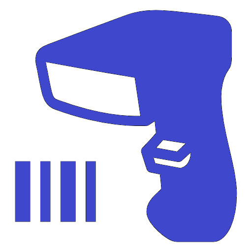

<ion-header [translucent]="true">
  <ion-toolbar>
    <ion-title>
      Buscador
    </ion-title>
  </ion-toolbar>
</ion-header>

<ion-content [fullscreen]="true" >

  <div style="text-align: center; padding-top:200px;">
    <ion-button (click)="takePhoto()" shape="round" >Show Camera</ion-button>
  </div>
  
  <div style="text-align: center; padding-top: 10px;">
    <ion-button (click)="getCodigoBarras()" shape="round">Scan</ion-button>
    <ion-button id="container" (click)="getSimilarProducts()" shape="round">buscar</ion-button>
  </div>
         <!-- <ion-button (click)="pruebaModalHardcodeado()" shape="round" expand="block">pruebaModalHardcodeado</ion-button>
          <ion-button (click)="pruebaLogSinModal()" shape="round" expand="block">pruebaLogSinModal</ion-button>  -->
         <!--  <ion-button shape="round" expand="block" (click)="pruebaModalFinal()">Final</ion-button>  -->
         <ion-button (click)="tomarFoto()" shape="round" expand="block">pruebaRELOJl</ion-button> 
         


   
     
      <ion-card *ngFor="let item of joyeria" >
        
        <ion-card-header>
          <ion-card-title>{{ item.descripcion }}</ion-card-title>
          <ion-card-subtitle>{{ item.precio }}</ion-card-subtitle>
        </ion-card-header>
        <ion-card-content>
          Founded in 1829 on an isthmus Madison was named the capital of the Wisconsin Territory in 1836.
        </ion-card-content>
      </ion-card>
   
 
  <!-- fab placed to the bottom end -->
  <ion-fab vertical="bottom" horizontal="end" slot="fixed">
    <ion-fab-button [routerLink]="['/set-productos']">
      <ion-icon name="add"></ion-icon>
    </ion-fab-button>
  </ion-fab>

</ion-content>
